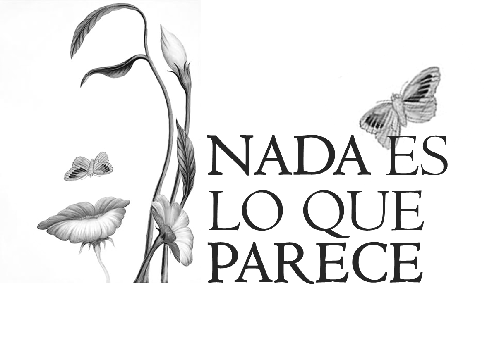

Nada es lo que parece
Nada es lo que parece

Sistemas de valores, imágenes simplificadas y generalizadoras, juicios totalizadores, ideas preconcebidas, formas esperadas… son un grupo de conceptos que tienden a dar sentido a la vida de una manera simple, pero no siempre todo es lo que parece.
Veamos...
Obra publicada con Licencia Creative Commons Reconocimiento No comercial Sin obra derivada 4.0